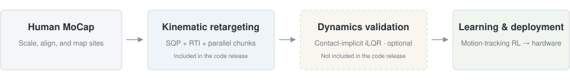
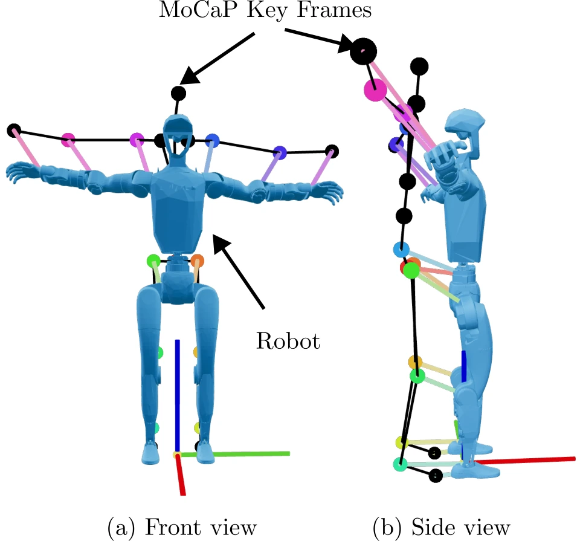
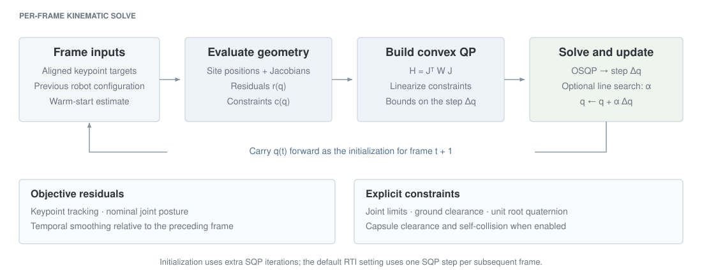
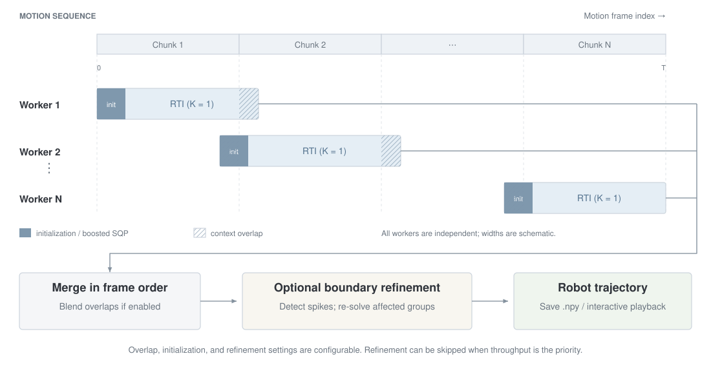
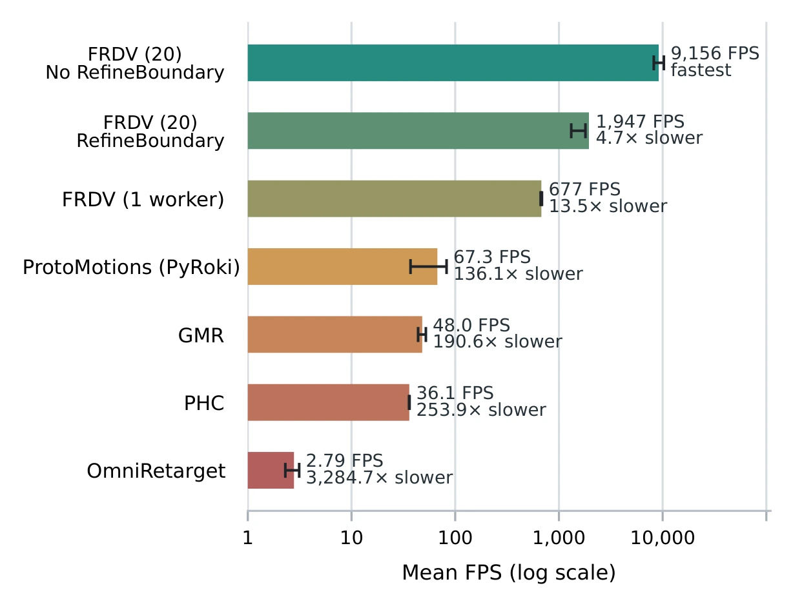
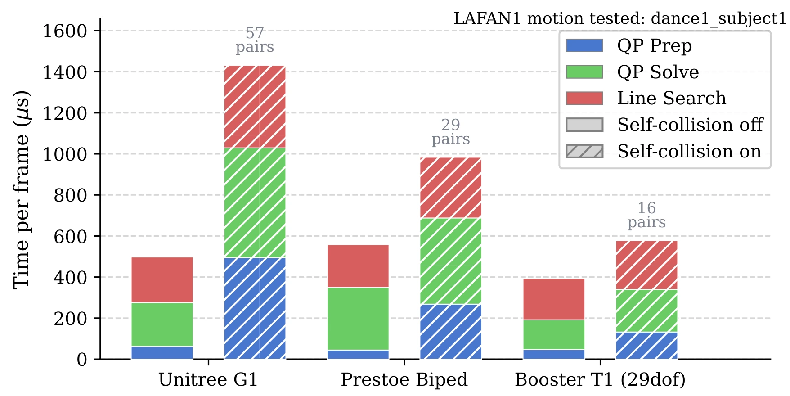
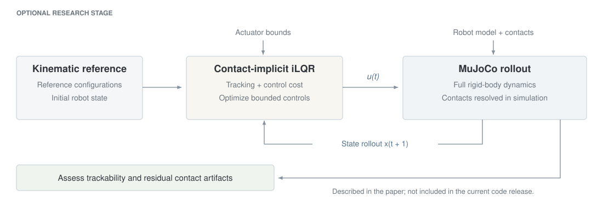
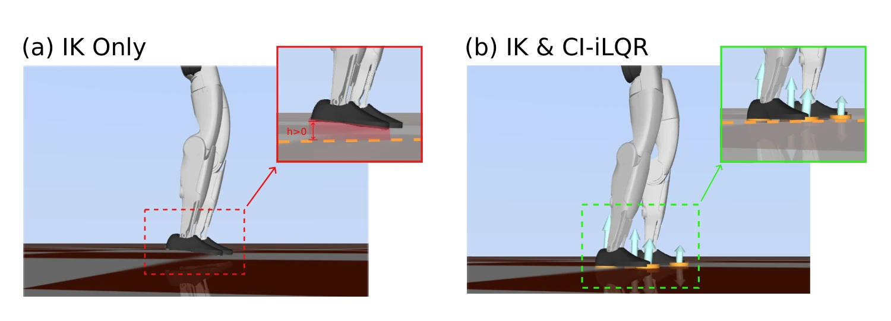
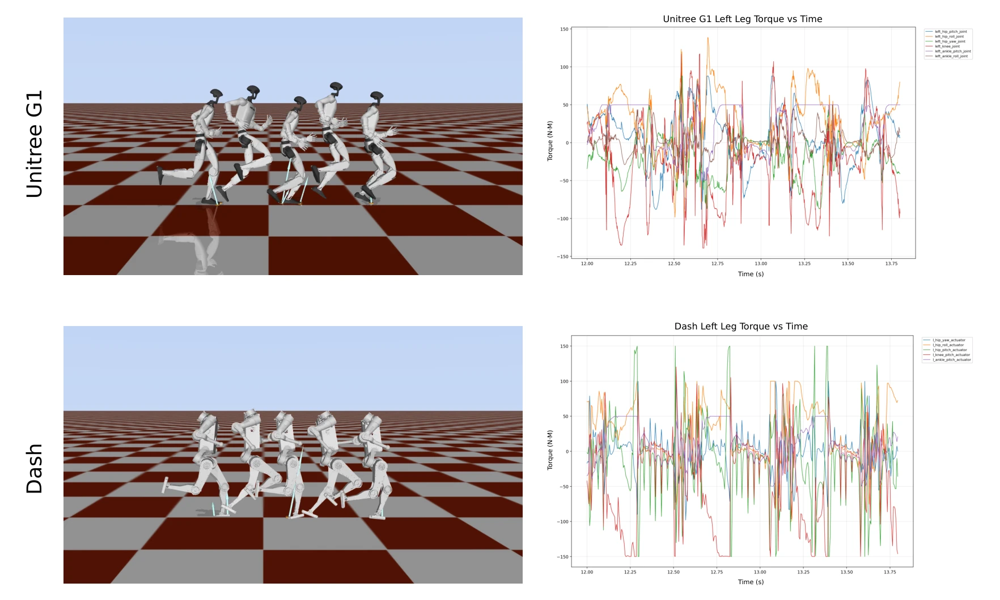
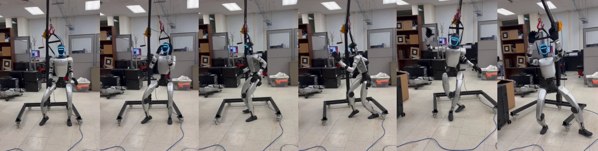

Abstract
Large-scale human motion capture datasets provide rich demonstrations for humanoid robot learning, but adapting these motions to different robots remains computationally expensive and prone to artifacts. We present FRDV, a framework combining rapid constrained kinematic retargeting with optional dynamics validation. A custom Sequential Quadratic Programming solver, Real-Time Iteration, and parallel chunk-based processing achieve up to 9,156 frames per second while incorporating robot-specific constraints to reduce ground penetration and self-collision. For motions requiring further verification, contact-implicit iLQR evaluates trackability under full rigid-body dynamics and actuator bounds, and refines contact artifacts such as foot floating and skating. We evaluate downstream utility through motion-tracking reinforcement learning and demonstrate zero-shot sim-to-real transfer on a Unitree G1 humanoid.
Method overview
The full research pipeline combines a CPU-based kinematic retargeting pipeline with optional dynamics validation before downstream policy learning.


Constrained kinematic retargeting
After morphology alignment, a specialized SQP solver tracks the human keypoints while respecting joint limits and collision constraints. Temporal warm starts enable a single SQP step per frame in Real-Time Iteration mode.
Parallel motion processing
Long sequences can be divided into chunks and solved in parallel. An optional boundary refinement step reduces discontinuities when independently optimized chunks are joined.
Optional dynamics validation
Contact-implicit iLQR tracks the reference under MuJoCo dynamics and actuator bounds, without a predefined contact schedule. This research stage assesses trackability and can refine contact artifacts before policy training.
Per-frame kinematic optimization
The solver constructs a Gauss–Newton quadratic approximation from tracking, posture, and smoothing residuals. It linearizes the active constraints, solves the QP, and updates the robot configuration; initial frames use additional iterations before switching to the default one-step RTI mode.

Chunk processing and trajectory refinement
Each worker solves an independent temporal chunk with context frames around its boundaries. Results are merged in frame order, with optional overlap blending. Optional refinement detects velocity and acceleration spikes and re-solves the affected groups of chunks.

Kinematic retargeting results
On LAFAN1, FRDV achieves a mean throughput of 9,156 FPS with 20 CPU workers and boundary refinement disabled. A single worker achieves 677 FPS; enabling boundary refinement with 20 workers yields approximately 1,947 FPS.


Scaling to AMASS
FRDV retargets 13,662 AMASS motion clips in approximately one hour with 20 workers.
| Method | Mean FPS per motion | Wall-clock time | Frames processed |
|---|---|---|---|
| ProtoMotions (PyRoki) | 57.8 | 45.06 h | 6,147,900 |
| FRDV (1 worker) | 709.3 | 7.43 h | 19,696,008 |
| FRDV (20 workers) | 4,324.4 | 1.08 h | 19,696,008 |
FRDV timing covers kinematic retargeting only. The 20-worker AMASS result excludes boundary refinement. ProtoMotions trims or pads each motion to 450 frames, explaining its lower frame count. Experiments use an AMD Ryzen Threadripper 9960X CPU and an NVIDIA RTX PRO 6000 Blackwell Max-Q GPU; FRDV kinematics run on CPU.
Dynamics validation
For challenging motions, contact-implicit iLQR evaluates the kinematic reference under full rigid-body dynamics. The paper demonstrates single-leg hopping on both G1 and Dash and correction of foot-skating artifacts.



On the first 26 s of Dance1-S1, policies trained on CI-iLQR-corrected references reduce mean global body-position tracking error from 103.12 to 86.58 mm. Mean anchor-relative error increases slightly, from 29.26 to 30.57 mm. Dynamics validation adds substantial processing time and is applied selectively.
Sim-to-real transfer
We train a motion-tracking policy in simulation using FRDV-retargeted motions and deploy it zero-shot on a physical Unitree G1, without hardware-specific fine-tuning.

BibTeX
@inproceedings{marew2026frdv,
title = {Fast Motion Retargeting Pipeline for Scalable Humanoid Robot Learning},
author = {Marew, Daniel and Park, Sangjun and Perera, Nisal and Kim, Donghyun},
booktitle = {2026 IEEE-RAS International Conference on Humanoid Robots (Humanoids)},
year = {2026}
}